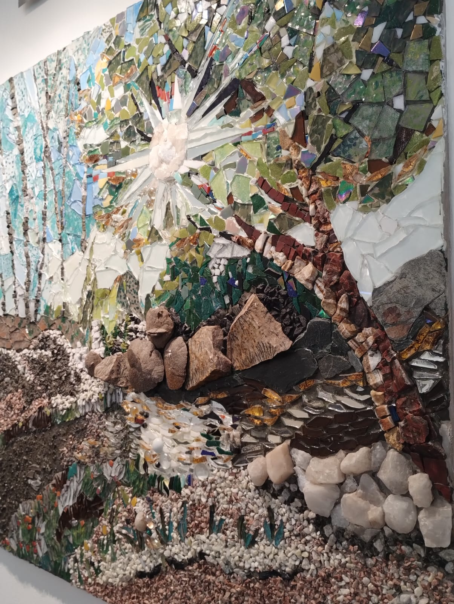

Disciplina artística
Nombre del artista
Ubicación: Ciudad, País
Obra destacada
Una obra, un vínculo
Archivo de obras
Línea de tiempo
Obras de ejemplo agrupadas por año, de lo más reciente a lo más antiguo.
Disciplina artística
Ubicación: Ciudad, País
Obra destacada

Archivo de obras
Obras de ejemplo agrupadas por año, de lo más reciente a lo más antiguo.